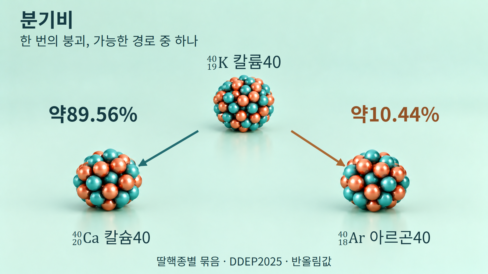
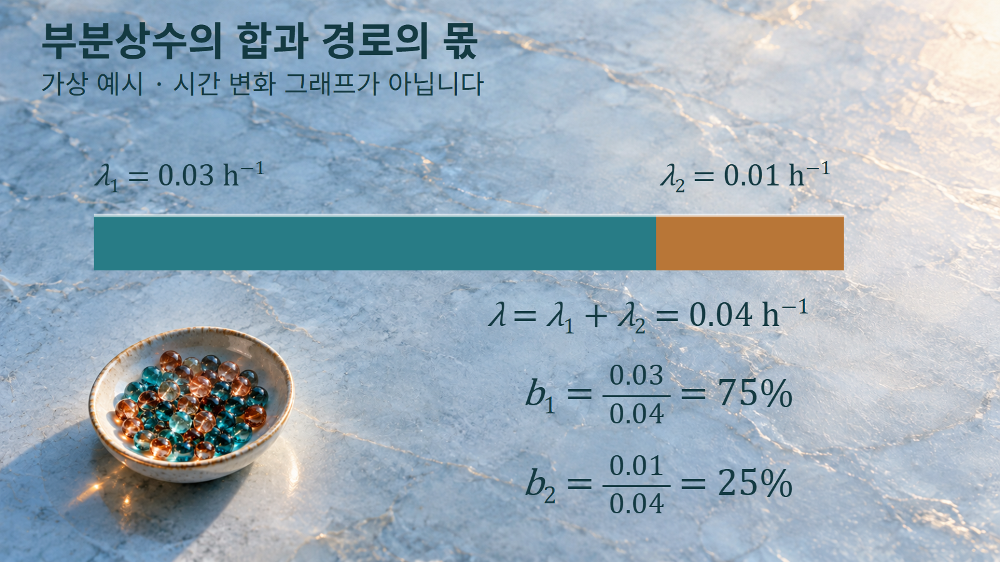
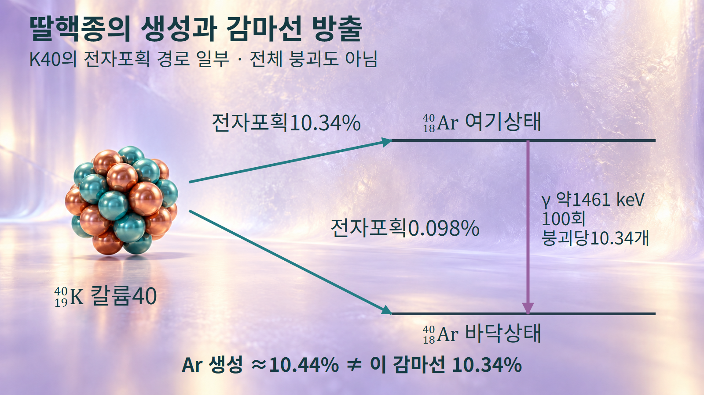

방사성붕괴와 시간 · 053
분기비
경쟁하는 붕괴 경로의 몫과 감마선 방출확률의 구분
칼륨40은 칼슘40 또는 아르곤40으로 바뀔 수 있습니다. 한 핵이 두 딸핵을 동시에 만드는 현상이 아니라, 집단의 각 붕괴 사건이 가능한 경로 중 하나를 따르는 현상입니다. 분기비는 같은 모핵종이 여러 붕괴 경로 가운데 한 경로로 갈 확률의 몫입니다.

여러 경로 사이의 붕괴 확률
분기비 bi는 모핵종의 붕괴 가운데 경로 i가 차지하는 확률입니다. 비교하는 모핵종과 핵의 상태를 같게 두어야 의미가 있습니다. 서로 다른 핵종이나 바닥상태와 준안정상태의 자료를 한 목록에 섞으면 같은 모집단의 경로 비율이 되지 않습니다.
예를 들어 경로1의 분기비가75%라면, 이 모형에서 임의의 붕괴 사건이 그 경로를 따를 확률이0.75라는 뜻입니다. 네 번을 관찰할 때 반드시 세 번이 경로1이라는 뜻은 아닙니다. 사건 수가 적으면 관측된 비율은 확률에서 벗어날 수 있으므로 평가자료의 확률과 실험에서 센 횟수를 구별합니다.
가능한 경로를 서로 겹치지 않게 나누고 빠짐없이 포함하면 분기비의 합은1입니다. 여기서 중요한 조건은 분류의 완전성과 배타성입니다. 전자포획 전체와 전자포획의 한 세부 경로를 같은 합계에 더하면 일부 사건을 두 번 세게 됩니다.
부분상수와 전체상수
각 경쟁 경로에는 부분 붕괴상수 λi를 대응시킬 수 있습니다. 이는 해당 경로로 붕괴하는 단위시간당 확률의 척도입니다. 매우 짧은 시간 dt 동안 경로 i의 사건 확률이 λidt이고, 모든 붕괴의 확률이 λdt이면 둘의 비가 경로의 조건부 확률이 됩니다.
λ = Σλi, bi = λi/λ
경쟁 경로의 전체상수는 부분상수의 합입니다. [1] 이 글에서는 양의 발생률 Ai=λiN과 모핵수의 감소율을 구별하여 −dN/dt=ΣAi=λN으로 씁니다. 따라서 전체 방사능 A에 대해 경로 발생률은 Ai=biA입니다.
λ와 λi는 같은 시간 단위로 나타내야 합니다. 두 값을 나눈 bi에서는 단위가 없어지지만, Ai는 초당 경로 사건의 발생률로 Bq에 대응합니다. 원래 식의 분모를 잊고 확률 자체를 Bq라고 표시하면 물리량을 혼동하게 됩니다.
두 부분상수를 더한 뒤 각 부분상수를 전체상수로 나누면 경로별 분기비를 구할 수 있습니다.

부분상수와 경로 발생률의 계산
예시1에서는 두 경로만 있는 가상 핵종을 생각하겠습니다. λ1=0.03 h−1, λ2=0.01 h−1이면 먼저 합을 구해 λ=0.04 h−1를 얻습니다. 다음으로 b1=0.03/0.04=0.75, b2=0.01/0.04=0.25를 계산합니다. 백분율로는75%와25%이고 합은100%입니다.
여기서 큰 부분상수는 그 경로로 붕괴할 가능성이 더 크다는 뜻입니다. 그림의 막대 길이는 두 부분상수의 기여를3:1로 표현하며 시간에 따른 핵수 변화가 아닙니다. 이 가상값을 실제 칼륨40의 붕괴상수나 분기비로 읽지 않습니다.
예시2는 같은75%·25% 분기비를 가진 가상 집단의 전체 방사능이 해당 시점에800 Bq인 경우입니다. 경로1의 발생률은0.75×800=600 Bq, 경로2는0.25×800=200 Bq입니다. 두 발생률을 더하면800 Bq로 돌아와 전체와 부분의 일관성을 확인할 수 있습니다.
600 Bq라는 결과가 검출기에 매초600개의 신호가 기록된다는 뜻은 아닙니다. 한 경로에서 어떤 방사선이 나오는지와 검출 과정은 별개의 정보입니다. 또한 주어진 시점의 발생률을 계산한 것이므로, 시간이 지나 전체 방사능이 변하면 같은 분기비라도 경로별 발생률은 함께 변합니다.
칼륨40의 딸핵종과 감마선
K40 붕괴의 평가된 네 경로는 다음과 같습니다. [2] 이 표의 분모는 모든 K40 붕괴이며, 전자포획은 딸핵의 여기상태와 바닥상태로 가는 경우를 나누었습니다.
| 붕괴 경로 | 도달하는 딸핵 상태 | 분기비 |
|---|---|---|
| 베타마이너스(β−) | 4020Ca 바닥상태 | 89.56(7)% |
| 전자포획 | 4018Ar 약1461 keV 여기상태 | 10.34(7)% |
| 전자포획 | 4018Ar 바닥상태 | 0.098(25)% |
| 베타플러스(β+) | 4018Ar 바닥상태 | 0.00103(13)% |
괄호는 마지막 자릿수에 대응하는 표준불확도 표기입니다. 예를 들어89.56(7)%의 불확도는0.07퍼센트포인트입니다. 인쇄값의 합은99.99903%이며, 반올림된 수치를 억지로 다시 정규화하지 않습니다. 딸핵종별로 묶으면 Ca40 약89.56%, Ar40 약10.44%로 표시할 수 있습니다.
아르곤40이 만들어지는 비율과 특정 감마선이 나오는 비율은 서로 다른 양입니다.

같은 평가의 광자 방출표는1460.822(6) keV 감마선에 대해 전체 붕괴100회당10.34(7)광자를 제시합니다. 반면 Ar40 생성에는 여기상태를 거치는 경로 외에 바닥상태로 직접 가는 작은 경로도 포함됩니다. 따라서 Ar40 생성 약10.44%를 이 감마선의 방출확률로 그대로 쓰면 안 됩니다.
이 구별은 방사선 스펙트럼에서 특정 선의 크기를 해석할 때 중요합니다. 딸핵종의 생성량을 설명하는 수치인지, 한 광자선을 방출하는 확률인지 먼저 확인해야 계산의 분모를 맞출 수 있습니다.
분류와 분모에 따른 해석
감마선 방출은 딸핵의 여기준위가 낮아지는 과정과 관련됩니다. 전자포획으로 바닥상태에 직접 도달하는 경로는 그림의 약1461 keV 전이를 거치지 않습니다. 그렇다고 그 사건에서 아무 광자도 나오지 않는다고 단정하지 않습니다. 원자껍질 재배열에 따른 X선 등은 별도로 구별해야 합니다.
여기준위의 전이에는 내부전환과 같은 경쟁 과정도 있으므로, 그 준위로 공급되는 확률과 감마광자 방출확률이 원리상 언제나 같지는 않습니다. 이번 평가표에서는 해당 두 수치가 같은10.34로 반올림돼 있습니다. 이를 모든 핵종과 모든 준위에 적용되는 등식으로 확대하지 않습니다.
여러 감마선의 방출확률을 모두 더해1이어야 한다고 요구하는 것도 적절하지 않습니다. 한 붕괴에서 연속된 전이로 여러 광자가 나올 수 있기 때문입니다. 모핵의 경쟁 붕괴 경로, 특정 준위로의 공급, 개별 방사선의 방출을 서로 다른 층위로 읽어야 합니다. 핵분열 생성물 수율 역시 이 글의 단일 딸핵 선택 모형에 그대로 넣는 값이 아닙니다.
기호와 단위의 비교
| 기호·수치 | 설명하는 대상 | 단위·분모 확인 |
|---|---|---|
| λ | 모핵의 모든 경쟁 경로를 합친 상수 | s−1 또는 h−1 |
| λi | 특정 경로의 부분상수 | λ와 같은 시간 단위 |
| bi | 경로 i의 확률 | 무차원, 같은 부모의 전체 붕괴 |
| Ai | 경로 i 사건의 순간 발생률 | Bq에 대응하는 초당 발생률 |
| 감마선 방출확률 | 지정한 에너지의 광자 방출 | 붕괴당 또는100회 붕괴당 광자 수 |
분기비를 읽을 때에는 먼저 같은 부모의 어떤 경로들을 비교하는지 확인합니다. 부분상수의 합으로 전체상수를 얻고 그 비로 경로의 몫을 계산하되, 특정 감마선의 방출을 설명하려면 준위의 공급과 전이 과정을 추가로 살펴봅니다. 이 순서를 통해 같은 평가표 안의10.44%와10.34%를 서로 모순되는 값이 아니라 다른 질문에 답하는 값으로 이해할 수 있습니다.